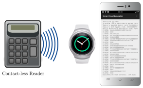

Tizen Smart Card Emulator¶
The Tizen Smart Card Emulator allows the emulation of a contact-less smart card. The emulator uses Tizen’s HCE to fetch APDUs from a contact-less reader. The headless Tizen service delegates the Command APDUs via Samsung’s Accessory Protocol to the Android Smart Card Emulator. The android app processes the commands and sends responses back to the contact-less reader via the Tizen Smart Card Emulator.
You may also attach your own simulation by using the Samsung Accessory Protocol for communicating with the tizen service.

Simulate a contact-less smart card with Android Smart Card Emulator
Download and Install¶
To manually compile the app you need to fetch the sources and initialize the submodules:
git clone https://github.com/frankmorgner/vsmartcard.git
We use Tizen SDK [1] to build and deploy the application. Use
to select .
In the next dialog choose Tizen/TCardEmulator. To be able to build and
install the Tizen service on the smartwatch, you need to install the
appropriate SDK extensions and register as app developer [2].
More usefull ressources:
Question¶
Do you have questions, suggestions or contributions? Feedback of any kind is more than welcome! Please use our project trackers.